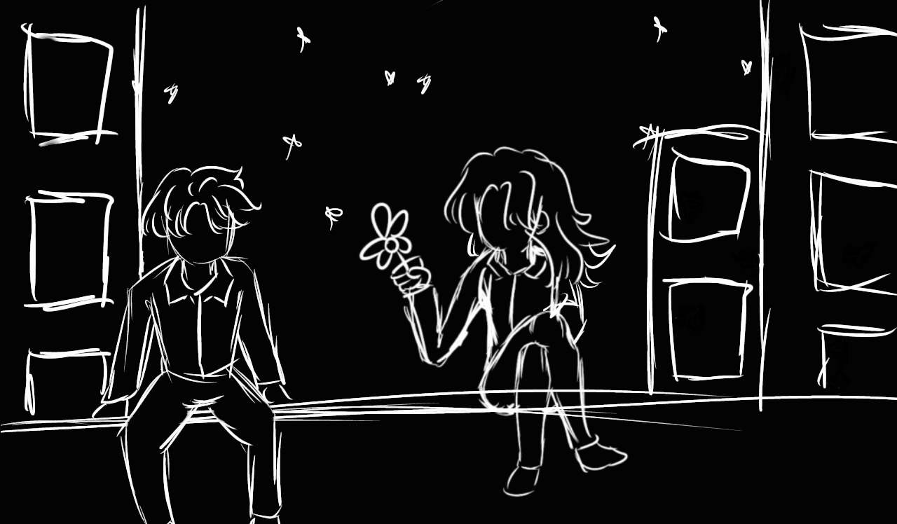
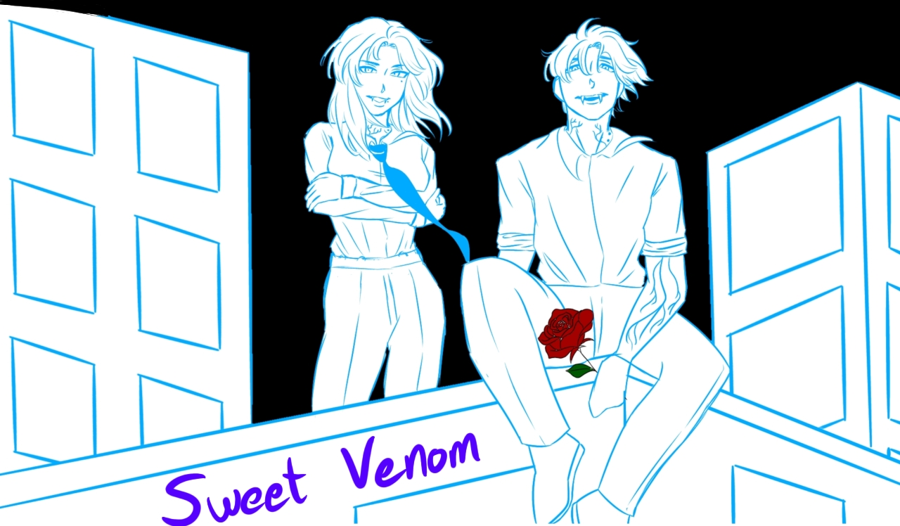
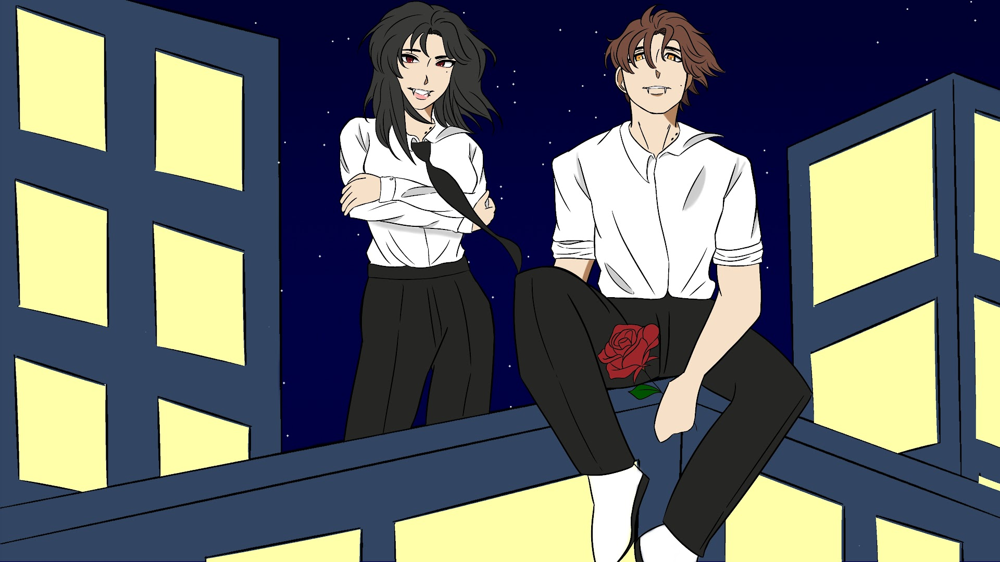
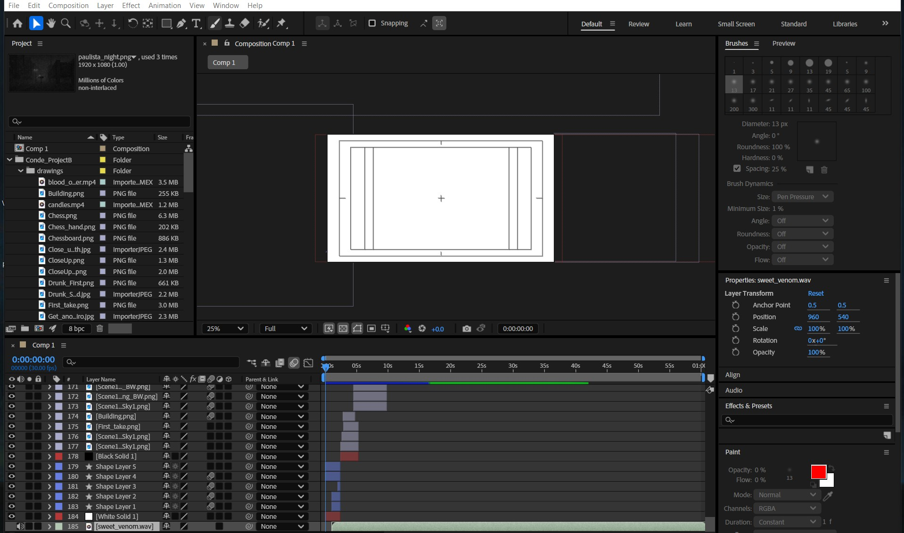

Sweet Venom Music Video
A different take on one of ENHYPEN's biggest hits.
Introduction
For this project, I was tasked with creating a music video for a song of my choice. The only requirements were that the graphics be relevant to the song and that the video be at least a minute long. Immediately, I knew Sweet Venom would be the perfect choice.
Sweet Venom is the title track of the album Orange Blood, the 5th mini album of the Korean pop group ENHYPEN. It’s one of my favorite songs, and ENHYPEN is my favorite artist. Enough reason to pick it. But what truly sparked my creativity was ENHYPEN’s vampire-inspired concept. Their music videos, outfits, and lyrics all contribute to this aesthetic, and Sweet Venom was no exception.
Having never drawn anything vampire-related before, I was thrilled to explore this theme. This project gave me the perfect opportunity to combine my love for the music with a new creative challenge, experimenting with motion graphics, color, and style along the way.
Disciplines
- Motion Graphics
- Illustration
- Graphic Design
- Experience Design
Storytelling
Responsibilities
- Conceptualize music video
- Make a script
- Make a storyboard
- Draw each panel
- Bring it together on After Effects
Timeline
- Brainstorming: 4 hours
- Script & Storyboard: 20 hours and 18 minutes
- Final panels: 23 hours and 13 minutes
- After Effects: 8 hours and 47 minutes
- Total: 52 hours and 18 minutes
Context and Brainstorming
The song’s title immediately hints at its theme: the narrator is addicted to his love interest’s “sweet venom,” willing to do anything for another taste. Many of ENHYPEN’s songs explore love that consumes and hurts, which aligns perfectly with their vampire concept. I decided to craft a dark, consuming love story. Though perhaps “love” is too simple a word for what unfolds.
In my version, the narrator (Hiro) is human and encounters a vampire (Momoka) who entices him, hiding her true nature at first. As he falls deeper under her spell, she reveals her dark side, and he becomes unable to resist. Eventually, he succumbs, transforming into a vampire himself, sealing their bittersweet fate together.
This story closely mirrors the lyrics. Lines like “I see your face, you’re up to something” hint at hidden intentions, while “Drunk on your poison in my blood veins” and “I’ll never be the same” convey the narrator’s slow surrender to the inevitable.
With the concept and story clear, developing a storyboard and planning visual sequences came naturally, allowing me to focus on composition, pacing, and visual storytelling.
Creating a Storyboard
I approached the storyboard line by line, paying close attention to the timing of each second. While the final version included some slight adjustments, most of the original storyboard made it into the finished video, guiding the pacing, flow, and visual storytelling throughout.
One of the things I wanted to put emphasis on was symbolism, adding symbols along the entire video. Each symbol has its own meaning.
The storyboard was entirely hand drawn.
.jpg)
.jpg)
.jpg)
.jpg)
.jpg)
.jpg)
.jpg)
.jpg)
.jpg)
.jpg)
.jpg)
.jpg)
.jpg)
.jpg)
.jpg)
.jpg)
.jpg)
Making the Illustrations
One of the most rewarding aspects of this project was getting hands-on with the drawings. While the process took longer than I initially expected, my attention to detail and constant drive to improve each frame allowed me to refine the visuals without compromising quality.
Initial sketch
Polished sketch
Final drawing
To streamline production, I repeated panels in black and white before recoloring them, reducing the need to redraw every frame from scratch. I decided to make roughly half the video in black and white, transitioning to full color as the story progresses. This visual shift reflects the narrator’s transformation: his world becomes vibrant and consuming as he gives in to the “sweet venom", reinforcing the narrative and lyrics.


Hover over to see effect ↑
Bringing it together
To start the final step of the project, I created a Google Drive folder where I stored all the panels I drew, naming each one of them after its respective line or scene.

After completing all the assets and panels, I brought the project together in After Effects. With the storyboard and timestamps fully planned, translating the scenes into the final video was seamless, allowing me to complete the production in a single day. The entire video was created in After Effects, where I animated each frame, adjusted timing, and applied effects to bring the story and visuals to life.

Additional Website
To wrap up this project, I made an entire website as an assigment for another class. This website functions as a 'Lorebook', getting into more detail about the story, characters and symbolism. Click here to check it out.